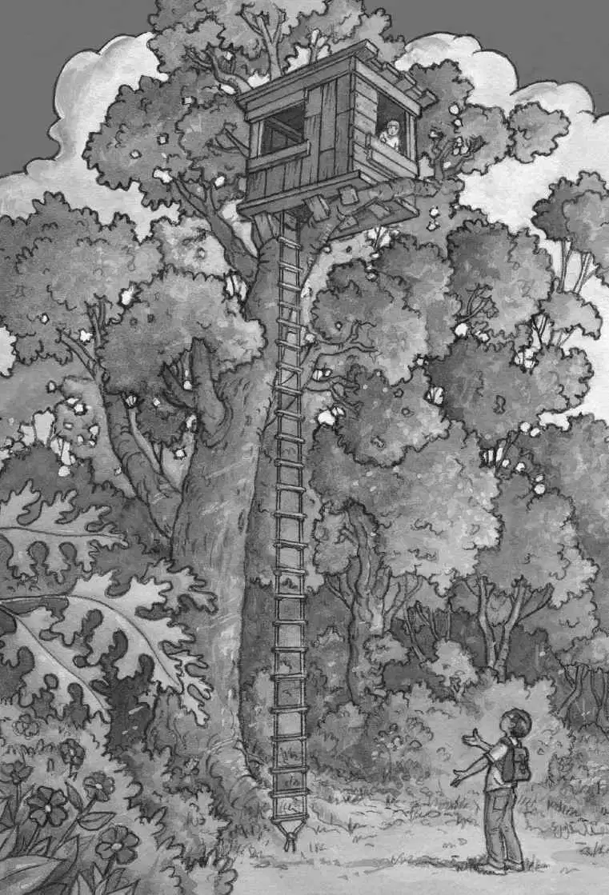

“Help! A monster!” said Annie.
“Yeah, sure,” said Jack. “A real monster in Frog Creek, Pennsylvania.”
“Run, Jack!” said Annie. She ran up the road.
Oh, brother, thought Jack. This is what he got for spending time with his seven-year-old sister.
Annie loved pretend stuff. But Jack was eight and a half. He liked real things.
“Watch out, Jack! The monster’s coming!” said Annie.
Jack didn’t say anything.
“Come on, Jack, I’ll race you!” said Annie.
“No, thanks,” said Jack.
Annie raced alone into the woods.
Jack looked at the sky. The sun was about to set.
“Come on, Annie! It’s time to go home!” yelled Jack.
But Annie didn’t answer.
Jack waited.
“Annie!” he called again.
“Jack! Jack!” Annie shouted. “Come here! Quick!”
Jack groaned. “This better be good,” he said.
Jack left the road and headed into the woods. The trees were lit with a golden late-afternoon light.
“Over here!” called Annie.
Annie was standing under a tall oak tree. “Look!” she said. She pointed at a rope ladder. It was hanging down from high in the tree.
“Wow,” Jack whispered.
At the top of the tree was a tree house, tucked between two branches.
“That must be the highest tree house in the world,” said Annie.
“Who built it?” asked Jack. “I’ve never seen it before.”
“I don’t know. But I’m going up,” said Annie.
“No! We don’t know who it belongs to,” said Jack.
“Just for a teeny minute,” said Annie. She started up the ladder.
“Annie, come back!” said Jack.
But Annie kept climbing. She climbed all the way up to the tallest branches.

Jack sighed. “Annie, it’s almost dark! We have to go home!”
Annie disappeared inside the tree house.
“Annie!” Jack called.
Jack waited a moment. He was about to call again when Annie poked her head out of the tree house window.
“Books!” Annie shouted.
“What?” Jack said.
“It’s filled with books!” said Annie.
Oh, man! Jack thought. He loved books.
Jack pushed his glasses into place. He gripped the sides of the rope ladder and started up.